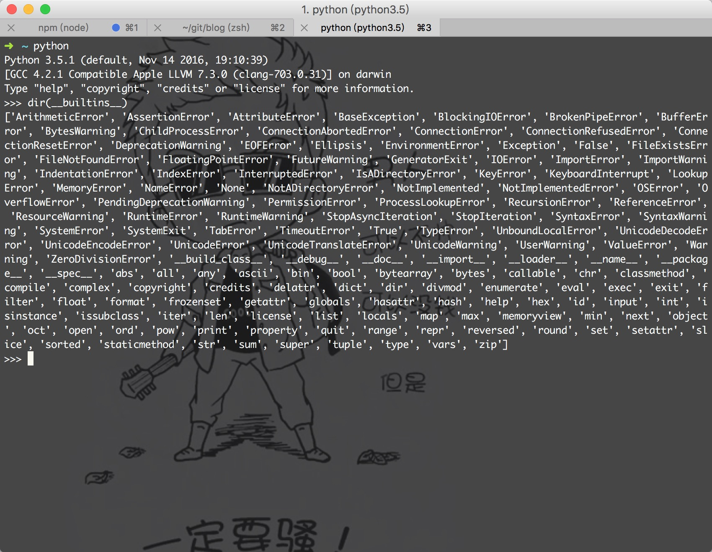
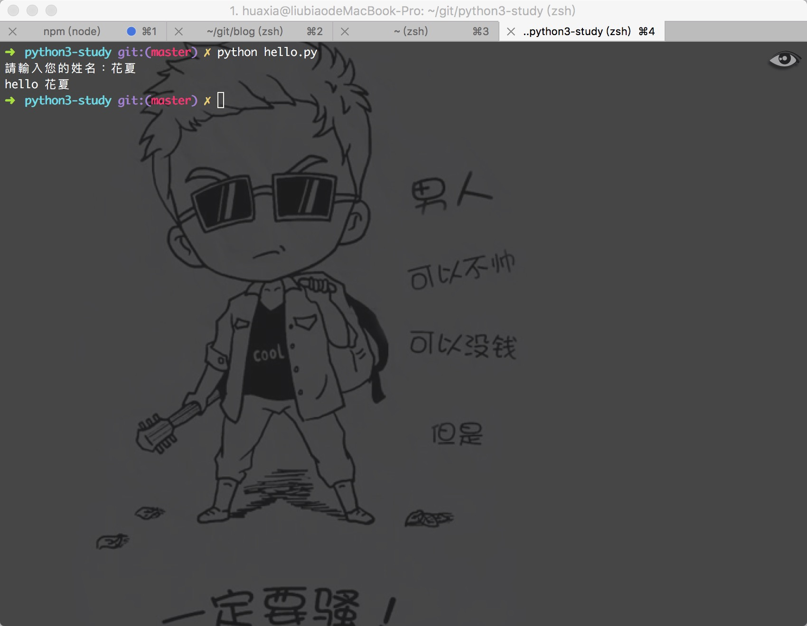
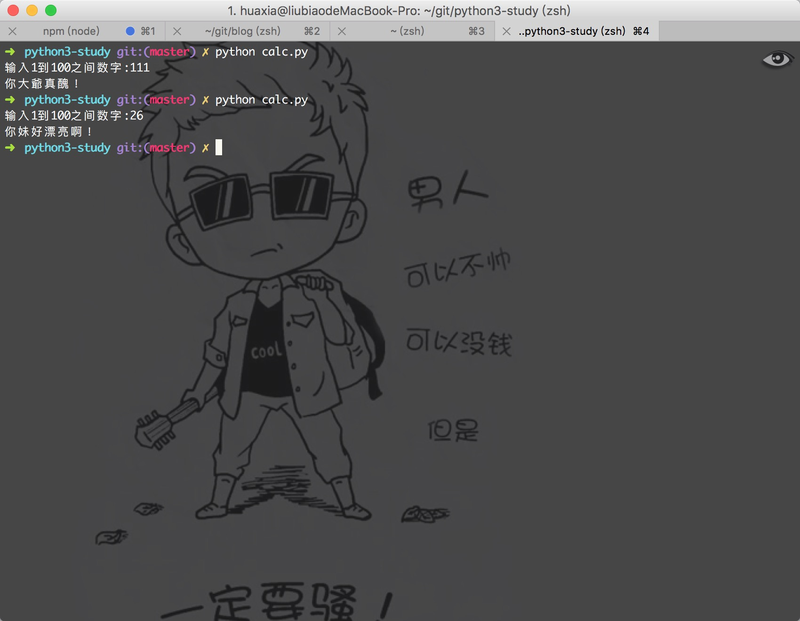

学习Python 002
测试题：
0.什么是BIF？
BIF 就是 Built-in Functions，内置函数。为了方便程序员快速编写脚本程序（脚本就是要编程速度快快快！！！），Python 提供了非常丰富的内置函数，我们只需要直接调用即可，例如 print() 的功能是“打印到屏幕”，input() 的作用是接收用户输入（注：Python3 用 input() 取代了 Python2 的 raw_input()
1.用Python3 提供了多少个 BIF？
dir(__builtins__)
['ArithmeticError', 'AssertionError', 'AttributeError', 'BaseException', 'BlockingIOError', 'BrokenPipeError', 'BufferError', 'BytesWarning', 'ChildProcessError', 'ConnectionAbortedError', 'ConnectionError', 'ConnectionRefusedError', 'ConnectionResetError', 'DeprecationWarning', 'EOFError', 'Ellipsis', 'EnvironmentError', 'Exception', 'False', 'FileExistsError', 'FileNotFoundError', 'FloatingPointError', 'FutureWarning', 'GeneratorExit', 'IOError', 'ImportError', 'ImportWarning', 'IndentationError', 'IndexError', 'InterruptedError', 'IsADirectoryError', 'KeyError', 'KeyboardInterrupt', 'LookupError', 'MemoryError', 'NameError', 'None', 'NotADirectoryError', 'NotImplemented', 'NotImplementedError', 'OSError', 'OverflowError', 'PendingDeprecationWarning', 'PermissionError', 'ProcessLookupError', 'RecursionError', 'ReferenceError', 'ResourceWarning', 'RuntimeError', 'RuntimeWarning', 'StopAsyncIteration', 'StopIteration', 'SyntaxError', 'SyntaxWarning', 'SystemError', 'SystemExit', 'TabError', 'TimeoutError', 'True', 'TypeError', 'UnboundLocalError', 'UnicodeDecodeError', 'UnicodeEncodeError', 'UnicodeError', 'UnicodeTranslateError', 'UnicodeWarning', 'UserWarning', 'ValueError', 'Warning', 'ZeroDivisionError', 'build_class', 'debug', 'doc', 'import', 'loader', 'name', 'package', 'spec', 'abs', 'all', 'any', 'ascii', 'bin', 'bool', 'bytearray', 'bytes', 'callable', 'chr', 'classmethod', 'compile', 'complex', 'copyright', 'credits', 'delattr', 'dict', 'dir', 'divmod', 'enumerate', 'eval', 'exec', 'exit', 'filter', 'float', 'format', 'frozenset', 'getattr', 'globals', 'hasattr', 'hash', 'help', 'hex', 'id', 'input', 'int', 'isinstance', 'issubclass', 'iter', 'len', 'license', 'list', 'locals', 'map', 'max', 'memoryview', 'min', 'next', 'object', 'oct', 'open', 'ord', 'pow', 'print', 'property', 'quit', 'range', 'repr', 'reversed', 'round', 'set', 'setattr', 'slice', 'sorted', 'staticmethod', 'str', 'sum', 'super', 'tuple', 'type', 'vars', 'zip']

2.在 Python 看来：'huar' 和 'HuaR' 一样吗？
不一样，因为 Python 是一个“敏感的小女孩”，所以不要试图欺骗她，对 Python 来说，huar 和 HuaR 是完全不同的两个名字，所以编程的时候一定要当心。不过 Python 会帮助解决可能因此出现的问题，例如只有当标识符已经赋值后（Python 的变量是不用先声明的）才能在代码中使用，未赋值的标识符直接使用会导致运行时错误，所以你很快就可以根据经验发现此问题。
3.Python 中什么是最重要的？你赞同吗？
缩进！缩进是 Python 的灵魂，缩进的严格要求使得 Python 的代码显得非常精简并且有层次。
4.
=和==，他们表示不同的含义，你在编程的过程中会不小心把==误写成=吗？有没有好的办法可以解决这个问题呢？
C语言的话，如果 if( c == 1 ) 写成 if( c = 1 )，程序就完全不按程序员原本的目的去执行，但在 Python 这里，不好意思，行不通，语法错误！
5.你听说过“拼接”这个词吗？
在一些编程语言，我们可以将两个字符串“相加”在一起，如：'I' + 'Love' + 'Huar' 会得到 'ILoveHuar'，在 Python 里，这种做法叫做拼接字符串。像javascript也是這樣的哦，作者是搞前端的~~~
動動手
0.编写程序：hello.py，要求用户输入姓名并打印“你好，姓名！”
name = input('請輸入您的姓名：')
print('hello ' + name)

1.编写程序：calc.py 要求用户输入1到100之间数字并判断，输入符合要求打印“你妹好漂亮”，不符合要求则打印“你大爷真丑”
num = input('输入1到100之间数字:')
num = int(num)
if num >= 1 and num <= 100:
print('你妹好漂亮啊！')
else:
print('你大爺真醜！')


微信打賞

支付寶打賞